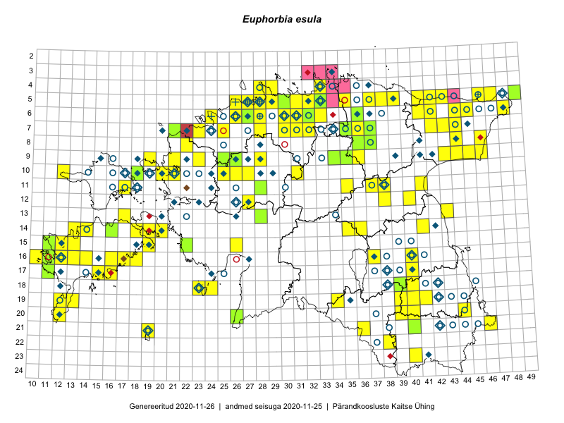

Euphorbia esula — kibe piimalill
Kaardile koondatud taksonid: Euphorbia esula subsp. esula L. (153); Euphorbia esula L. (41)

Kaart põhineb 194 kirjel, neist:
vaatlusi 168
eksemplare 26
Kaasaegsed1 leiukohad asuvad 127 ruudus.
Andmed “Eesti taimede levikuatlasest”,2 sulgudes ruutude arv:3
● 1971–2005 (59)
○ 1921–1970 (12)
△ kuni 1920 (2)
+ hävinud (0)
? kaheldav (0)
Lisaruudud teistest andmebaasidest:4
ELF: 2006– . . . (0)
PKÜ: 2006– . . . (7)
ELF: 1971–2005 (0)
PKÜ: 1997–2005 (3)
| Ruut | Vaatleja(d) | Vaatlusaeg | Kirje PlutoFis |
|---|---|---|---|
| 19-40 | Malle Leht | 2015-05-16 | ruut/ala: Euphorbia esula subsp. esula L. |
| 21-40 | Malle Leht | 2015-08-02 | ruut/ala: Euphorbia esula subsp. esula L. |
| 07-42 | Toomas Kukk, Peedu Saar | 2014-09-25 | ruut/ala: Euphorbia esula subsp. esula L. |
| 05-32 | Rein Kalamees | 2015-09-03 | ruut/ala: Euphorbia esula subsp. esula L. |
| 14-41 | Peedu Saar, Ott Luuk | 2015-06-21 | ruut/ala: Euphorbia esula subsp. esula L. |
| 05-49 | Tiit Hallikma, Toomas Kukk | 2015-07-22 | ruut/ala: Euphorbia esula subsp. esula L. |
| 06-41 | Peedu Saar, Sander Laherand | 2015-06-01 | ruut/ala: Euphorbia esula subsp. esula L. |
| 08-44 | Peedu Saar, Liina Oja | 2015-07-20 | ruut/ala: Euphorbia esula subsp. esula L. |
| 06-44 | Peedu Saar, Liina Oja | 2015-07-21 | ruut/ala: Euphorbia esula subsp. esula L. |
| 18-40 | Malle Leht | 2015-07-25 | ruut/ala: Euphorbia esula subsp. esula L. |
| 20-39 | Malle Leht, Raivo Leht | 2015-07-28 | ruut/ala: Euphorbia esula subsp. esula L. |
| 20-40 | Malle Leht, Raivo Leht | 2015-07-27 | ruut/ala: Euphorbia esula subsp. esula L. |
| 19-39 | Malle Leht | 2015-07-08 | ruut/ala: Euphorbia esula subsp. esula L. |
| 09-45 | Peedu Saar, Liina Oja | 2015-07-24 | ruut/ala: Euphorbia esula subsp. esula L. |
| 12-40 | Peedu Saar, Eerik Leibak | 2015-08-16 | ruut/ala: Euphorbia esula subsp. esula L. |
| 04-33 | Rein Kalamees, Kersti Püssa | 2015-09-12 | ruut/ala: Euphorbia esula subsp. esula L. |
| 06-31 | Rein Kalamees, Kersti Püssa | 2015-09-13 | ruut/ala: Euphorbia esula subsp. esula L. |
| 06-32 | Rein Kalamees, Kersti Püssa | 2015-09-13 | ruut/ala: Euphorbia esula subsp. esula L. |
| 11-41 | Peedu Saar | 2015-08-22 | ruut/ala: Euphorbia esula subsp. esula L. |
| 06-48 | Ott Luuk, Hannes Pehlak | 2015-07-21 | ruut/ala: Euphorbia esula L. |
| 16-17 | Meeli Mesipuu, Kadri Tali | 2015-07-06 | ruut/ala: Euphorbia esula subsp. esula L. |
| 16-18 | Meeli Mesipuu, Kadri Tali | 2015-07-06 | ruut/ala: Euphorbia esula subsp. esula L. |
| 17-40 | Thea Kull, Peedu Saar | 2015-06-19 | ruut/ala: Euphorbia esula subsp. esula L. |
| 13-17 | Meeli Mesipuu, Kadri Tali | 2015-07-08 | ruut/ala: Euphorbia esula subsp. esula L. |
| 14-16 | Toomas Kukk, Thea Kull, Ott Luuk, Peedu Saar | 2014-06-27 | ruut/ala: Euphorbia esula subsp. esula L. |
| 06-45 | Thea Kull, Eerik Leibak | 2015-07-20 | ruut/ala: Euphorbia esula subsp. esula L. |
| 08-46 | Thea Kull, Eerik Leibak | 2015-07-23 | ruut/ala: Euphorbia esula subsp. esula L. |
| 09-35 | Jana-Maria Habicht, Ester Valdvee, Kirke Pilvik, Anu Nurk | 2015-07-30 | ruut/ala: Euphorbia esula subsp. esula L. |
| 09-36 | Jana-Maria Habicht, Ester Valdvee | 2015-08-15 | ruut/ala: Euphorbia esula subsp. esula L. |
| 07-43 | Meeli Mesipuu, Timo Luhamäe | 2015-07-22 | ruut/ala: Euphorbia esula subsp. esula L. |
| 22-38 | Eeva-Maria Jeletsky, Tarmo Niitla | 2015-07-15 | ruut/ala: Euphorbia esula subsp. esula L. |
| 19-13 | Oliver Parrest | 2015-07-01 | ruut/ala: Euphorbia esula subsp. esula L. |
| 11-37 | Ülle Jõgar, Illi Tarmu, K. Rünk | 2015-07-24 | ruut/ala: Euphorbia esula subsp. esula L. |
| 15-19 | Meeli Mesipuu | 2015-06-21 | ruut/ala: Euphorbia esula subsp. esula L. |
| 16-12 | Mari Reitalu | 2015-06-16 | ruut/ala: Euphorbia esula subsp. esula L. |
| 15-13 | Mari Reitalu, Oliver Parrest | 2015-07-24 | ruut/ala: Euphorbia esula subsp. esula L. |
| 15-11 | Mari Reitalu, Oliver Parrest | 2015-07-16 | ruut/ala: Euphorbia esula subsp. esula L. |
| 12-38 | Ulvi Selgis | 2015-08-09 | ruut/ala: Euphorbia esula subsp. esula L. |
| 16-11 | Mari Reitalu, Triin Reitalu | 2015-05-28 | ruut/ala: Euphorbia esula subsp. esula L. |
| 17-11 | Mari Reitalu, Triin Reitalu | 2015-08-05 | ruut/ala: Euphorbia esula subsp. esula L. |
| 16-12 | Mari Reitalu | 2015-07-08 | ruut/ala: Euphorbia esula subsp. esula L. |
| 10-25 | Aat Sarv | 2015-05-31 | ruut/ala: Euphorbia esula subsp. esula L. |
| 07-44 | Timo Luhamäe, Eerik Leibak | 2015-05-30 | ruut/ala: Euphorbia esula subsp. esula L. |
| 07-42 | Mari Metsoja, Jaak-Albert Metsoja | 2015-07-23 | ruut/ala: Euphorbia esula subsp. esula L. |
| 06-42 | Mari Metsoja, Jaak-Albert Metsoja | 2015-07-21 | ruut/ala: Euphorbia esula subsp. esula L. |
| 06-24 | Mari Metsoja, Jaak-Albert Metsoja | 2015-07-31 | ruut/ala: Euphorbia esula subsp. esula L. |
| 06-26 | Mari Metsoja, Jaak-Albert Metsoja | 2015-07-29 | ruut/ala: Euphorbia esula subsp. esula L. |
| 05-42 | Kaili Orav, Silvia Pihu | 2015-06-18 | ruut/ala: Euphorbia esula subsp. esula L. |
| 05-41 | Kaili Orav, Silvia Pihu | 2015-06-18 | ruut/ala: Euphorbia esula subsp. esula L. |
| 05-39 | Kaili Orav, Silvia Pihu | 2015-06-19 | ruut/ala: Euphorbia esula subsp. esula L. |
| 09-26 | Peedu Saar, Kersti Püssa, Rein Kalamees, Toomas Kukk | 2014-06-11 | ruut/ala: Euphorbia esula subsp. esula L. |
| 14-35 | Aat Sarv | 2015-05-22 | ruut/ala: Euphorbia esula subsp. esula L. |
| 09-26 | Thea Kull, Meeli Mesipuu, Eerik Leibak | 2014-06-11 | ruut/ala: Euphorbia esula subsp. esula L. |
| 09-25 | Thea Kull, Meeli Mesipuu, Eerik Leibak | 2014-06-11 | ruut/ala: Euphorbia esula subsp. esula L. |
| 10-26 | Jaak-Albert Metsoja, Ott Luuk, Maret Gerz | 2014-06-11 | ruut/ala: Euphorbia esula subsp. esula L. |
| 06-26 | Peedu Saar, Ott Luuk | 2014-09-03 | ruut/ala: Euphorbia esula subsp. esula L. |
| 10-27 | Aat Sarv | 2015-07-02 | ruut/ala: Euphorbia esula subsp. esula L. |
| 06-27 | Tõnu Ploompuu | 2015-08-11 | ruut/ala: Euphorbia esula subsp. esula L. |
| 10-20 | Toomas Kukk, Peedu Saar | 2016-05-12 | ruut/ala: Euphorbia esula subsp. esula L. |
| 09-25 | Meelis Muuga, Tõnu Ploompuu | 2015-08-17 | ruut/ala: Euphorbia esula subsp. esula L. |
| 09-21 | Kadi-Liis Kesler, Tõnu Ploompuu | 2015-07-14 | ruut/ala: Euphorbia esula subsp. esula L. |
| 06-28 | Tõnu Ploompuu | 2015-06-06 | ruut/ala: Euphorbia esula subsp. esula L. |
| 06-28 | Toomas Kukk | 2016-06-02 | ruut/ala: Euphorbia esula subsp. esula L. |
| 10-21 | Tõnu Ploompuu | 2015-08-21 | ruut/ala: Euphorbia esula subsp. esula L. |
| 13-43 | Kai Rünk, Ülle Jõgar, Illi Tarmu | 2016-06-10 | ruut/ala: Euphorbia esula subsp. esula L. |
| 11-38 | Eeva-Maria Jeletsky, Tarmo Niitla | 2016-06-09 | ruut/ala: Euphorbia esula subsp. esula L. |
| 20-44 | Peedu Saar, Tarmo Niitla | 2016-06-15 | ruut/ala: Euphorbia esula subsp. esula L. |
| 19-41 | Vivika Väli, Ülo Väli | 2015-06-20 | ruut/ala: Euphorbia esula subsp. esula L. |
| 06-24 | Thea Kull, Helle Mäemets | 2016-07-07 | ruut/ala: Euphorbia esula subsp. esula L. |
| 09-25 | Thea Kull, Oliver Parrest | 2016-07-06 | ruut/ala: Euphorbia esula subsp. esula L. |
| 06-26 | Tiina Elvisto, Eerik Leibak | 2016-07-04 | ruut/ala: Euphorbia esula subsp. esula L. |
| 10-18 | Sander Laherand, Toomas Kukk | 2016-07-07 | ruut/ala: Euphorbia esula subsp. esula L. |
| 05-37 | Tõnu Ploompuu, Eerik Leibak | 2016-07-27 | ruut/ala: Euphorbia esula subsp. esula L. |
| 05-38 | Tõnu Ploompuu, Eerik Leibak | 2016-07-27 | ruut/ala: Euphorbia esula subsp. esula L. |
| 05-47 | Erkki Otsman, Sergei Smirnov | 2016-06-16 | ruut/ala: Euphorbia esula subsp. esula L. |
| 05-46 | Erkki Otsman, Sergei Smirnov | 2016-06-17 | ruut/ala: Euphorbia esula subsp. esula L. |
| 14-14 | Peedu Saar, Maret Gerz | 2016-08-12 | ruut/ala: Euphorbia esula subsp. esula L. |
| 11-17 | Maret Gerz, Meeli Mesipuu | 2016-08-08 | ruut/ala: Euphorbia esula subsp. esula L. |
| 06-28 | Erkki Otsman, Sergei Smirnov | 2016-07-14 | ruut/ala: Euphorbia esula subsp. esula L. |
| 06-30 | Toomas Kukk, Sander Laherand | 2016-08-30 | ruut/ala: Euphorbia esula subsp. esula L. |
| 05-32 | Toomas Kukk, Sander Laherand | 2016-08-31 | ruut/ala: Euphorbia esula subsp. esula L. |
| 17-16 | Toomas Kukk, Meeli Mesipuu | 2016-08-12 | ruut/ala: Euphorbia esula subsp. esula L. |
| 04-29 | Sander Laherand, Tõnu Ploompuu, Nele Jõessar | 2016-07-25 | ruut/ala: Euphorbia esula subsp. esula L. |
| 07-30 | Toomas Kukk, Peedu Saar | 2016-09-09 | ruut/ala: Euphorbia esula subsp. esula L. |
| 06-32 | Toomas Kukk, Peedu Saar | 2016-09-08 | ruut/ala: Euphorbia esula subsp. esula L. |
| 07-35 | Toomas Kukk, Sander Laherand, Nele Jõessar | 2016-07-27 | ruut/ala: Euphorbia esula subsp. esula L. |
| 09-19 | Rein Kalamees, Liina Oja | 2016-07-07 | ruut/ala: Euphorbia esula subsp. esula L. |
| 21-19 | Meeli Mesipuu, Ott Luuk | 2016-09-10 | ruut/ala: Euphorbia esula subsp. esula L. |
| 05-31 | Sander Laherand, Toomas Kukk | 2016-08-30 | ruut/ala: Euphorbia esula subsp. esula L. |
| 06-33 | Peedu Saar, Toomas Kukk | 2016-09-14 | ruut/ala: Euphorbia esula subsp. esula L. |
| 05-43 | Peedu Saar, Toomas Kukk | 2016-09-13 | ruut/ala: Euphorbia esula subsp. esula L. |
| 14-18 | Mari Reitalu, Sirje Azarov | 2016-08-09 | ruut/ala: Euphorbia esula subsp. esula L. |
| 14-20 | Mari Reitalu, Sirje Azarov | 2016-08-17 | ruut/ala: Euphorbia esula subsp. esula L. |
| 19-13 | Mari Reitalu, Sirje Azarov | 2016-07-31 | ruut/ala: Euphorbia esula subsp. esula L. |
| 20-12 | Mari Reitalu, Sirje Azarov | 2016-08-08 | ruut/ala: Euphorbia esula subsp. esula L. |
| 09-28 | Rein Kalamees, Liina Oja | 2016-07-06 | ruut/ala: Euphorbia esula subsp. esula L. |
| 07-32 | Rein Kalamees, Kersti Püssa | 2016-06-23 | ruut/ala: Euphorbia esula subsp. esula L. |
| 09-46 | Rein Kalamees, Kersti Püssa | 2016-06-28 | ruut/ala: Euphorbia esula subsp. esula L. |
| 18-24 | Peedu Saar, Ott Luuk | 2016-09-21 | ruut/ala: Euphorbia esula subsp. esula L. |
| 16-16 | Meeli Mesipuu | 2016-09-25 | ruut/ala: Euphorbia esula subsp. esula L. |
| 07-25 | Helle Mäemets, Tiina Elvisto | 2016-07-05 | ruut/ala: Euphorbia esula subsp. esula L. |
| 16-14 | Meeli Mesipuu | 2016-09-26 | ruut/ala: Euphorbia esula subsp. esula L. |
| 05-35 | Peedu Saar, Liina Oja, Susanna Vain | 2016-07-27 | ruut/ala: Euphorbia esula subsp. esula L. |
| 11-35 | Peedu Saar, Timo Luhamäe | 2016-07-21 | ruut/ala: Euphorbia esula subsp. esula L. |
| 15-11 | Meeli Mesipuu, Toomas Kukk, Mari Reitalu | 2016-10-07 | ruut/ala: Euphorbia esula subsp. esula L. |
| 14-13 | Toomas Kukk, Meeli Mesipuu, Mari Reitalu | 2016-10-06 | ruut/ala: Euphorbia esula subsp. esula L. |
| 14-19 | Meeli Mesipuu | 2016-06-29 | ruut/ala: Euphorbia esula subsp. esula L. |
| 07-31 | Peedu Saar, Toivo Sepp | 2016-07-18 | ruut/ala: Euphorbia esula subsp. esula L. |
| 10-27 | Peedu Saar, Timo Luhamäe, Johannes Kõdar | 2016-07-06 | ruut/ala: Euphorbia esula subsp. esula L. |
| 05-39 | Ott Luuk, Tiit Hallikma | 2016-07-28 | ruut/ala: Euphorbia esula subsp. esula L. |
| 12-27 | Ranno Puumets | 2015-06-01 | ruut/ala: Euphorbia esula L. |
| 17-15 | Meeli Mesipuu, Toomas Kukk, Johannes Kõdar | 2016-08-11 | ruut/ala: Euphorbia esula subsp. esula L. |
| 04-28 | Kadi-Liis Kesler, Tiina Elvisto | 2015-08-12 | ruut/ala: Euphorbia esula subsp. esula L. |
| 09-23 | Jaak-Albert Metsoja, Mari Metsoja | 2016-07-06 | ruut/ala: Euphorbia esula subsp. esula L. |
| 09-43 | Hannes Pehlak, Ott Luuk | 2016-07-29 | ruut/ala: Euphorbia esula subsp. esula L. |
| 16-10 | Sirje Azarov | 2016-10-05 | ruut/ala: Euphorbia esula subsp. esula L. |
| 16-17 | Mari Reitalu | 2008-07-08 | ruut/ala: Euphorbia esula subsp. esula L. |
| 15-12 | Mari Reitalu | 2007-04-26 | ruut/ala: Euphorbia esula subsp. esula L. |
| 15-26 | Indrek Tammekänd | 2017-07-09 | ruut/ala: Euphorbia esula L. |
| 16-37 | Meeli Mesipuu | 2017-07-27 | ruut/ala: Euphorbia esula L. |
| 12-27 | Mari Reitalu, Eerik Leibak | 2017-08-09 | ruut/ala: Euphorbia esula subsp. esula L. |
| 07-25 | Mari Reitalu, Indrek Tammekänd | 2017-08-10 | ruut/ala: Euphorbia esula subsp. esula L. |
| 07-23 | Mari Reitalu, Indrek Tammekänd | 2017-08-10 | ruut/ala: Euphorbia esula subsp. esula L. |
| 06-28 | Mari Reitalu, Olev Abner, Ester Valdvee, Tõnu Ploompuu | 2016-06-18 | ruut/ala: Euphorbia esula subsp. esula L. |
| 11-17 | Toomas Kukk, Peeter Pärn | 2017-09-10 | ruut/ala: Euphorbia esula subsp. esula L. |
| 10-12 | Toomas Kukk, Indrek Tammekänd | 2017-09-12 | ruut/ala: Euphorbia esula subsp. esula L. |
| 11-17 | Toomas Kukk, Indrek Tammekänd | 2017-09-11 | ruut/ala: Euphorbia esula subsp. esula L. |
| 21-36 | Peedu Saar, Ott Luuk | 2017-07-28 | ruut/ala: Euphorbia esula subsp. esula L. |
| 05-28 | Erkki Otsman, Sergei Smirnov | 2015-06-26 | ruut/ala: Euphorbia esula subsp. esula L. |
| 14-20 | Meeli Mesipuu, Kadri Tali | 2015-06-26 | ruut/ala: Euphorbia esula subsp. esula L. |
| 14-20 | Meeli Mesipuu, Kadri Tali | 2015-06-26 | ruut/ala: Euphorbia esula L. |
| 09-26 | Peedu Saar, Kersti Püssa, Rein Kalamees, Toomas Kukk | 2014-06-11 | punkt: Euphorbia esula L. |
| 09-26 | Peedu Saar, Kersti Püssa, Rein Kalamees, Toomas Kukk | 2014-06-11 | punkt: Euphorbia esula L. |
| 08-46 | Indrek Tammekänd | 2016-05-29 | punkt: Euphorbia esula L. |
| 13-28 | Indrek Tammekänd | 2016-08-31 | punkt: Euphorbia esula L. |
| 05-28 | Toomas Kukk, Peedu Saar | 2016-08-03 | ruut/ala: Euphorbia esula subsp. esula L. |
| 21-19 | Ott Luuk, Meeli Mesipuu | 2016-09-10 | punkt: Euphorbia esula L. |
| 16-40 | Meeli Mesipuu | 2017-07-02 | punkt: Euphorbia esula L. |
| 14-36 | Peedu Saar | 2017-08-15 | punkt: Euphorbia esula subsp. esula L. |
| 21-36 | Ott Luuk, Peedu Saar | 2017-07-28 | punkt: Euphorbia esula subsp. esula L. |
| 18-24 | Mari Reitalu, Sirje Azarov, Ester Valdvee, Triin Reitalu | 2017-07-11 | ruut/ala: Euphorbia esula subsp. esula L. |
| 07-43 | Meeli Mesipuu | 2018-05-25 | ruut/ala: Euphorbia esula L. |
| 07-43 | Meeli Mesipuu | 2018-05-25 | punkt: Euphorbia esula L. |
| 21-46 | Rein Kalamees | 2018-06-19 | ruut/ala: Euphorbia esula subsp. esula L. |
| 10-31 | Ott Luuk | 2018-08-01 | punkt: Euphorbia esula L. |
| 04-33 | Peedu Saar, Toomas Kukk | 2018-08-08 | ruut/ala: Euphorbia esula subsp. esula L. |
| 04-33 | Peedu Saar, Toomas Kukk | 2018-08-08 | ruut/ala: Euphorbia esula subsp. esula L. |
| 11-28 | Ott Luuk, Toivo Sepp | 2018-08-24 | ruut/ala: Euphorbia esula L. |
| 17-11 | Mari Reitalu | 2018-09-21 | punkt: Euphorbia esula L. |
| 05-46 | Toomas Kukk, Peedu Saar | 2018-09-04 | punkt: Euphorbia esula subsp. esula L. |
| 06-27 | Meeli Mesipuu | 2019-06-16 | ruut/ala: Euphorbia esula subsp. esula L. |
| 06-27 | Meeli Mesipuu | 2019-06-16 | ruut/ala: Euphorbia esula L. |
| 06-27 | Meeli Mesipuu | 2019-06-22 | ruut/ala: Euphorbia esula subsp. esula L. |
| 06-27 | Meeli Mesipuu | 2019-06-22 | ruut/ala: Euphorbia esula subsp. esula L. |
| 06-27 | Meeli Mesipuu | 2019-06-22 | ruut/ala: Euphorbia esula subsp. esula L. |
| 05-27 | Meeli Mesipuu | 2019-06-22 | ruut/ala: Euphorbia esula subsp. esula L. |
| 05-27 | Meeli Mesipuu | 2019-06-26 | ruut/ala: Euphorbia esula subsp. esula L. |
| 05-28 | Meeli Mesipuu | 2019-06-30 | ruut/ala: Euphorbia esula subsp. esula L. |
| 19-12 | Mari Reitalu, Sirje Azarov | 2019-07-11 | ruut/ala: Euphorbia esula subsp. esula L. |
| 05-29 | Thea Kull | 2019-06-12 | ruut/ala: Euphorbia esula subsp. esula L. |
| 08-22 | Peedu Saar | 2019-07-23 | ruut/ala: Euphorbia esula subsp. esula L. |
| 09-44 | Ott Luuk | 2019-09-28 | ruut/ala: Euphorbia esula L. |
| 10-21 | Ott Luuk | 2019-09-19 | ruut/ala: Euphorbia esula L. |
| 05-38 | Ott Luuk, Jaak-Albert Metsoja | 2019-08-06 | ruut/ala: Euphorbia esula subsp. esula L. |
| 07-36 | Ott Luuk, Jaak-Albert Metsoja | 2019-08-05 | ruut/ala: Euphorbia esula subsp. esula L. |
| 05-26 | Ott Luuk, Peedu Saar | 2019-09-02 | ruut/ala: Euphorbia esula L. |
| 06-27 | Anneli Palo | 2007 | punkt: Euphorbia esula subsp. esula L. |
| 18-23 | Indrek Tammekänd | 2018-05-31 | ruut/ala: Euphorbia esula L. |
| 06-36 | Toomas Kukk | 2006-07-19 | TAA0077751: Euphorbia esula L. |
| 06-36 | Toomas Kukk | 2006-07-19 | TAA0077752: Euphorbia esula L. |
| 09-35 | Jana-Maria Habicht | 2015-07-30 | TAM0119855: Euphorbia esula L. |
| 15-11 | Toomas Kukk | 2015-07-01 | TAA0134361: Euphorbia esula L. |
| 09-25 | Thea Kull, Meeli Mesipuu | 2014-06-11 | TAA0113831: Euphorbia esula L. |
| 05-49 | Toomas Kukk, Tiit Hallikma | 2015-07-22 | TAA0135108: Euphorbia esula L. |
| 05-49 | Toomas Kukk, Tiit Hallikma | 2015-07-22 | TAA0135109: Euphorbia esula L. |
| 07-35 | Sander Laherand, Nele Jõessar, Toomas Kukk | 2016-07-27 | TAA0135870: Euphorbia esula subsp. esula L. |
| 10-18 | Toomas Kukk, Sander Laherand | 2016-07-07 | TAA0139481: Euphorbia esula L. |
| 10-18 | Toomas Kukk, Sander Laherand | 2016-07-07 | TAAdupl0139481: Euphorbia esula L. |
| 09-26 | Toomas Kukk | 2014-06-11 | TAA0112929: Euphorbia esula L. |
| 09-26 | Toomas Kukk | 2014-06-11 | TAA0112930: Euphorbia esula L. |
| 09-26 | Toomas Kukk | 2014-06-11 | TAA0112932: Euphorbia esula L. |
| 14-16 | Toomas Kukk | 2014-06-27 | TAA0113409: Euphorbia esula L. |
| 14-16 | Toomas Kukk | 2014-06-27 | TAA0113410: Euphorbia esula L. |
| 15-22 | Indrek Tammekänd, Raivo Endrekson | 2016-06-25 | TAA0139854: Euphorbia esula L. |
| 13-28 | Indrek Tammekänd | 2016-08-31 | TAA0139723: Euphorbia esula L. |
| 11-28 | Thea Kull, Ott Luuk | 2017-08-08 | TAA0142328: Euphorbia esula subsp. esula L. |
| 07-21 | Toomas Kukk, Ilmar Uibopuu | 2017-07-28 | TAA0141748: Euphorbia esula subsp. esula L. |
| 07-21 | Toomas Kukk, Ilmar Uibopuu | 2017-07-28 | TAA0141749: Euphorbia esula subsp. esula L. |
| 20-26 | Ott Luuk | 2017-08-30 | TAA0142809: Euphorbia esula subsp. esula L. |
| 20-26 | Ott Luuk | 2017-08-30 | TAA0142810: Euphorbia esula subsp. esula L. |
| 05-33 | Ott Luuk, Hannes Pehlak | 2016-07-27 | TAA0147292: Euphorbia esula L. |
| 07-35 | Toomas Kukk, Rein Kalamees, Kaur Maran | 2019-08-07 | TAA0148625: Euphorbia esula L. |
| 07-35 | Toomas Kukk, Rein Kalamees, Kaur Maran | 2019-08-07 | TAA0148626: Euphorbia esula L. |
| 08-37 | Ott Luuk, Peedu Saar | 2019-06-12 | TAA0151500: Euphorbia esula L. |
Kaasaegsed leiukohad (tähistatud värvitud ruutudega) põhinevad peamiselt 2014–2019 välitööandmetel. Väiksemal määral on andmebaasi kantud vanemaid leiuandmeid aastatest 2006–2013.↩︎
Kukk, T., Kull, T., Eesti taimede levikuatlas. Eesti Maaülikool, Põllumajandus- ja Keskkonnainstituut, Tartu, 2005.↩︎
NB! 2005. aasta atlase andmestikus katavad uuemad leiud vanemaid. Näiteks kui liik on ruudus registreeritud 1971–2005, siis pole võimalik öelda, kas ta oli sellest ruudust teada ka enne 1970. aastat. Vana atlase andmetel hävinud ja kaheldavaid leiukohti pole hilisemate (taas)leidude põhjal korrigeeritud.↩︎
Eestimaa Looduse Fondi (ELF) ja Pärandkoosluste Kaitse Ühingu (PKÜ) andmebaasid sisaldavad inventeeritud koosluste kirjeldusi ja liigiloendeid. Neist andmekogudest on kaardile lisatud lisatud vaid need ruudud, millest uue atlase andmekogus taksoni kohta kirjeid veel pole. Kõrvale on jäetud teadaolevalt kaheldavad määrangud. Kaartidel katavad uuema perioodi andmed vanemaid, PKÜ omad ELFi omi. Kattumise tõttu võib kaardil näha olla vähem mingi kategooria ruute kui legendis olev arv näitab. ELFi ja PKÜ andmed ei kajastu hetkel vaatluste tabelis ega ruutude liigiloendites.↩︎